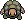
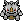
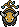
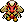
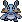
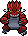
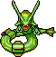

公會
花費 50,000 金錢建立公會。名稱為 3-16 個字元（字母、數字、空格）。
一開始有 5 個成員名額，每提升一級公會就增加（Lv 10 = 30 名成員）。會長從 93 隻寶可夢和 16 種顏色中挑選會徽；會徽會顯示在成員名字旁邊。
EXP 稅為 0-50%（以 5% 為一階）：成員 EXP 的該比例會繳給公會，用來提升公會等級（最高 Lv 10）。
僅限成員的公會聊天。 寶可夢戰爭
會徽



















公會等級經驗
| 等級 | 累計經驗值 | 成員上限 |
|---|---|---|
| 2 | 2,000 | 8 |
| 3 | 8,000 | 11 |
| 4 | 18,000 | 14 |
| 5 | 32,000 | 17 |
| 6 | 150,000 | 20 |
| 7 | 450,000 | 23 |
| 8 | 1,000,000 | 26 |
| 9 | 2,200,000 | 28 |
| 10 | 4,500,000 | 30 |